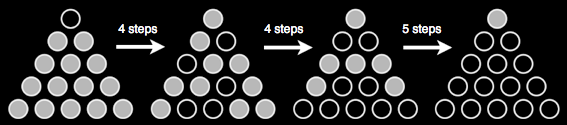

تُعتبر أحجية السوليتير على اليمين محلولة حين لا يبقى سوى حجر واحد على الطاولة بعد 13 حركة. عند كل حركة، يتم إختيار حجر وتمريره من فوق حجر آخر تتم إزالته عن اللوحة.
هذا ليس بالأمر السهل. تُظهر الصورة أدناه بعض الخطوات الوسطية للوصول إلى الحل، إنطلاقاً من بداية معينة
يتمكن المحترفون الحقيقيون من وضع الحجر الأخير في الموقع الذي كان فارغاً في بداية اللعبة.
|
 |
الخطوات الوسيطة لحل